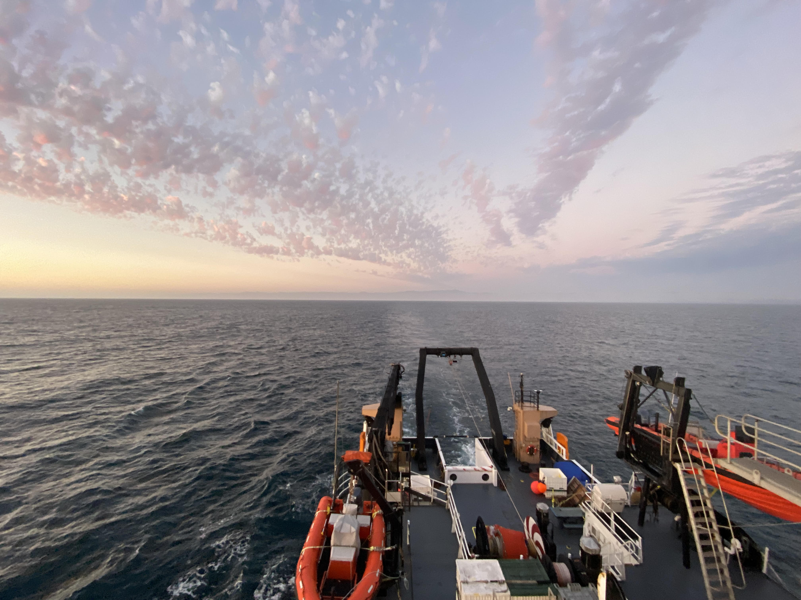

AST Lab Manual
This is a training and field manual describing methods used in the SWFSC Advanced Survey Technologies Program.
Last updated: 2025-06-24 00:38:01 UTC

Top Links
AST Calendar
SWFSC Tech Tank Reservation Request
AST Shared Drive Link
AST Surveys Google Drive Link
AST SOP Google Drive Link
Who are we?
The Advanced Survey Technologies program supports ecosystem-based fisheries management through new or innovative uses of sampling technologies, including: multi-frequency acoustic systems, remotely operated vehicles, instrumented buoys, and instrumented small craft. Read more about our objectives on the SWFSC website. We work routinely work closely with the SWFSC Life History Program and the Fish Population Dynamics and Modeling Program.
Our primary project is to manage an annual acoustic-trawl survey for West Coast coastal pelagic species (CPS). CPS play an important role in the California Current ecosystem. They’re food sources for marine mammals, sea birds, and larger fish, and they support commercial and recreational fisheries (Zwolinski et al. 2014). Each year the NOAA Southwest Fisheries Science Center surveys the west coast from Baja Mexico to Vancouver Island, Canada to measure the biomass of 5 key coastal pelagic species: Pacific Sardine Sardinops sagax, Northern Anchovy Engraulis mordax, Pacific Mackerel Scomber japonicus, Jack Mackerel Trachurus symmetricus, Pacific Herring Clupea pallasii, and Round Herring Etrumeus acuminatus. The biomass and abundance estimates derived from the survey are used in stock assessment models to support sustainable fisheries.
How to Access Our Data
NOAA Coast Watch ERDDAP:
NOAA Ship Reuben Lasker Underway Meteorological Data
NOAA National Centers for Environmental Information (NCE):
Locate raw acoustic data using the NCEI Water Column Sonar Data Viewer.
Download raw acoustic data via the viewer or the AWS NCEI bucket.
Document Objective:
This document serves to be a record of standard operating procedures and methods used in supporting AST projects. As part of our commitment to open science, reproducibility, and transparency, we provide this guide to compliment our public-domain data. Please consider this resource to be a Living Document. The code in this repository is regularly being updated and improved.
Use the left hand panel to navigate through various projects and methodologies. Staff must have access to the AST Google Drive in order to view most google drive links.
Do not hesitate to reach out (to us at either alice.beittel@noaa.gov or GitHub issues, especially if you find discrepancies in the data or want to suggest improvements to infrastructure. Thank you in advance for your collaboration and partnership with us as we develop our future data universe.
NOAA README
This repository is a scientific product and is not official communication of the National Oceanic and Atmospheric Administration, or the United States Department of Commerce. All NOAA GitHub project code is provided on an ‘as is’ basis and the user assumes responsibility for its use. Any claims against the Department of Commerce or Department of Commerce bureaus stemming from the use of this GitHub project will be governed by all applicable Federal law. Any reference to specific commercial products, processes, or services by service mark, trademark, manufacturer, or otherwise, does not constitute or imply their endorsement, recommendation or favoring by the Department of Commerce. The Department of Commerce seal and logo, or the seal and logo of a DOC bureau, shall not be used in any manner to imply endorsement of any commercial product or activity by DOC or the United States Government.
NOAA License
Software code created by U.S. Government employees is not subject to copyright in the United States (17 U.S.C. §105). The United States/Department of Commerce reserve all rights to seek and obtain copyright protection in countries other than the United States for Software authored in its entirety by the Department of Commerce. To this end, the Department of Commerce hereby grants to Recipient a royalty-free, nonexclusive license to use, copy, and create derivative works of the Software outside of the United States.
Copyright 2024 SWFSC Advanced Survey Technology Program
Licensed under the Apache License, Version 2.0 (the “License”); you may not use this file except in compliance with the License. You may obtain a copy of the License at http://www.apache.org/licenses/LICENSE-2.0
Unless required by applicable law or agreed to in writing, software distributed under the License is distributed on an “AS IS” BASIS, WITHOUT WARRANTIES OR CONDITIONS OF ANY KIND, either express or implied. See the License for the specific language governing permissions and limitations under the License.